Illuminating space.
Inspiring soul.

Light, balance
and purpose.
An architecture and interior design studio in Chennai, designing homes, workplaces and public spaces across Tamil Nadu since 2024.
To us, architecture is an act of illumination, not just of space but of spirit. Every project is a dialogue between light and material, human and nature, idea and impact.
Drawn with care.
Built with precision.
Homes, interiors and workplaces, each starting from its site and the people who will use it.
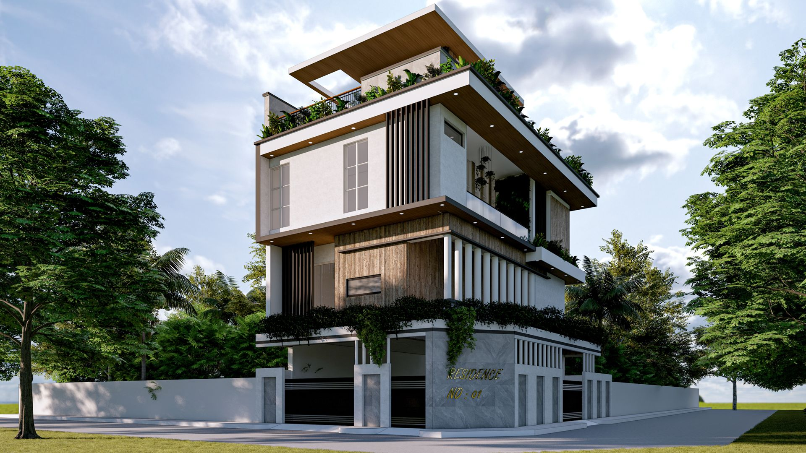

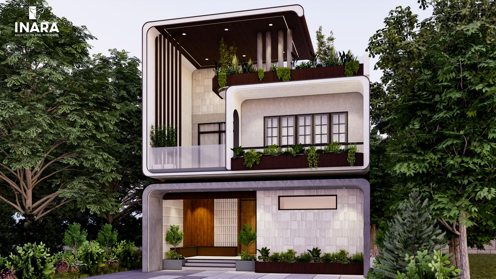
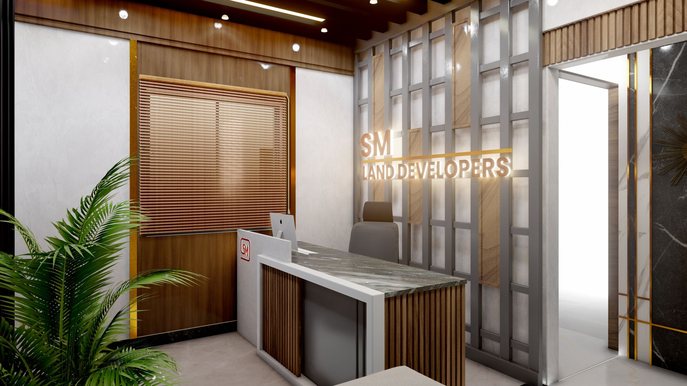

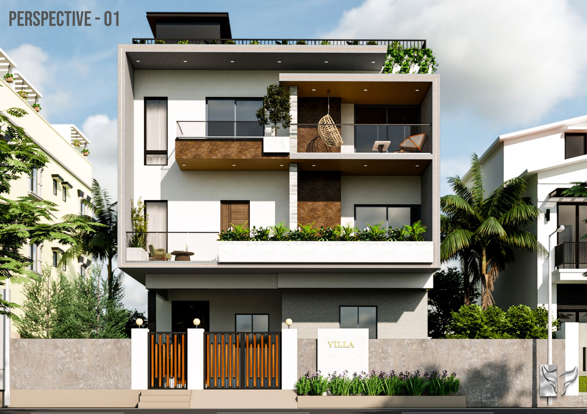
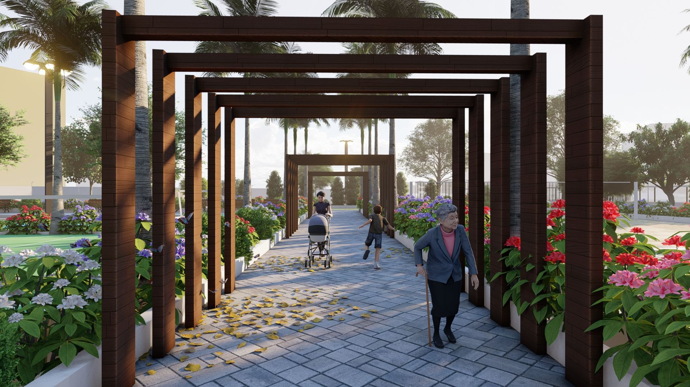
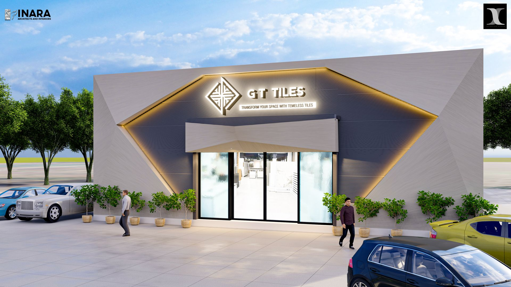
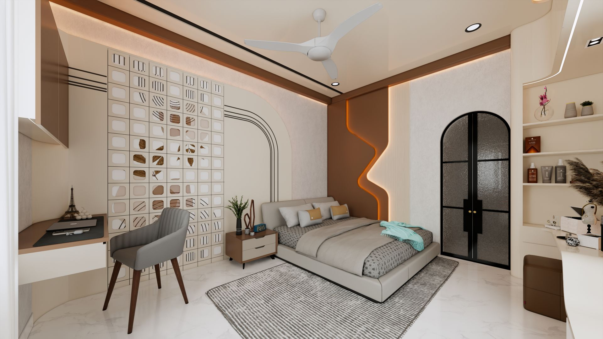
Keep scrolling, and step into the light.
We design with light before we design with walls.
Every plan begins with a sun study: where morning light arrives, where the afternoon heat lands, and how filtered daylight can make a room feel calm all day.
One studio, from the first sketch to the final finish.
Six disciplines under one roof, so nothing gets lost between the drawing board and the site.
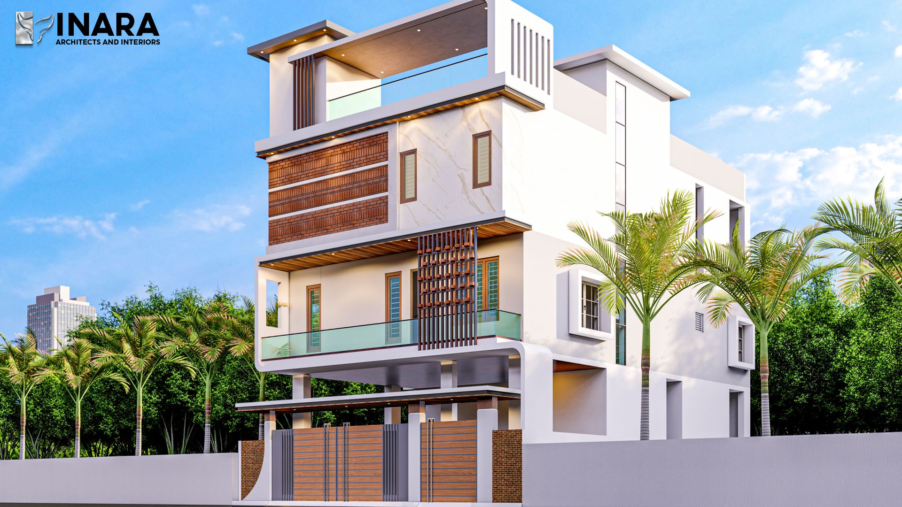
Architecture
Homes and buildings planned around light, climate and the way you live.
We design individual homes, multi-storey residences and commercial buildings across Chennai and Tamil Nadu. Every scheme begins with the site: its orientation, its neighbours, its breeze and its sun. From there we shape plans that are efficient on paper and generous in experience, with elevations that give each building a quiet, lasting identity.
Learn moreInterior Design
Interiors that are personal, practical and built to the millimetre.
Our interiors are designed as a single composition with the architecture: ceilings, joinery, lighting and finishes worked out together. We produce detailed drawings for every wardrobe, kitchen and feature wall, and photorealistic views so you can walk through your home before a single panel is cut.
Learn more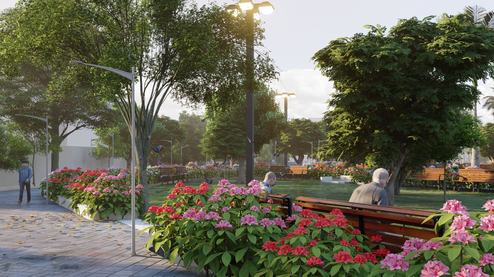
Landscape and Urban Design
Outdoor rooms, streets and parks that bring people and nature together.
From a terrace garden to a neighbourhood park, landscape is where architecture meets the city and the climate. Our work includes redevelopment studies for public spaces in Chennai such as T. Nagar and Kotturpuram, where shade, walkability and planting carry as much weight as built form.
Learn more
Renovation
New life for existing homes, without losing what made them yours.
A good renovation keeps the memory of a place while fixing what no longer works. We survey and measure the existing building, study the structure with our civil team, and propose changes that improve light, flow and storage. Then we phase the work so families can plan around it.
Learn more
Project Management and Execution
One team responsible from drawing board to handover.
Because we take responsibility for both design and execution, the drawings on paper are the building you receive. Civil execution is led by our director Mr. Munusamy through MS Constructions, while the design team stays on site through every stage to check quality, resolve details and keep cost and time in view.
Learn moreCommercial and Healthcare
Showrooms, offices, banquet halls and hospital spaces that work hard and feel calm.
Commercial spaces must perform: they need to draw people in, move them easily and stand up to daily use. Our commercial work spans jewellery and tile showrooms, offices and banquet halls. In healthcare, including our work for the Tata Cancer Hospital, we design for calm, hygiene and clear wayfinding.
Learn moreSix stages. One team responsible for all of them.
Because we handle both design and execution, the drawings on paper become the building you receive.
Listen
We meet you, visit the site and write down the brief together: how you live or work, what you need, what you can spend and when.
Concept
Sketches, plan options and massing studies. We test ideas against light, climate, Vastu preferences and budget before choosing a direction.
Design development
Plans, elevations and 3D views are refined until every room is right. Materials and finishes are chosen with samples in hand.
Drawings and approvals
A complete set of working, structural and services drawings, plus the drawings needed for planning permission.
Execution
Our civil team builds while our designers supervise, so decisions on site stay true to the design.
Handover
Snag lists closed, documents handed over, and a walk through your finished space together.
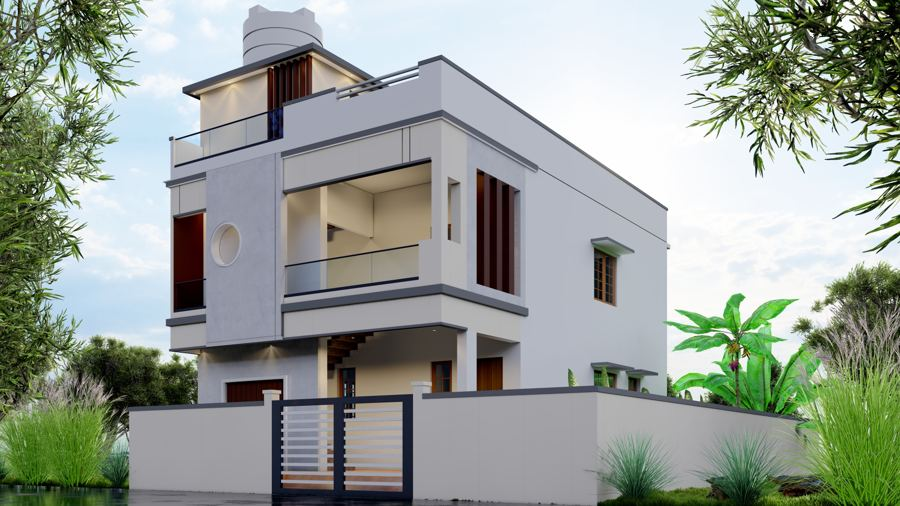
Working with the team was a smooth and well-organised experience. They took the time to understand our requirements and translated them into a practical and aesthetic design. The quality of execution and attention to detail were impressive.
For my residence on a 1,200 sq.ft. plot, the team delivered a refined contemporary design that maximises space while keeping a strong architectural identity. The planning is thoughtful, the detailing is precise, and the result is a home that feels modern, comfortable and timeless.
On our 35' x 80' Mannargudi site, the team transformed a large 4,000 sq.ft. built-up home into a contemporary, clean and welcoming space. Every area feels open, functional and designed to create meaningful memories for our family.
From initial design discussions to final handover, the project was handled professionally. The team maintained clarity in design, cost and timelines, and the final outcome met our expectations in every aspect.
The renovation design brought a fresh, contemporary look while improving functionality. The space now feels more practical and thoughtfully planned. We are very satisfied with the outcome.
A professional and reliable team that cares about details. We are very satisfied with the work and happy to recommend them.
Notes from the studio.
Guides, ideas and lessons from our projects, for anyone planning to build, renovate or simply live better.

Designing with Light in a Tropical City
Inara means light. In Chennai, the challenge is not finding light but taming it. Here is how we let daylight in without letting the heat follow.
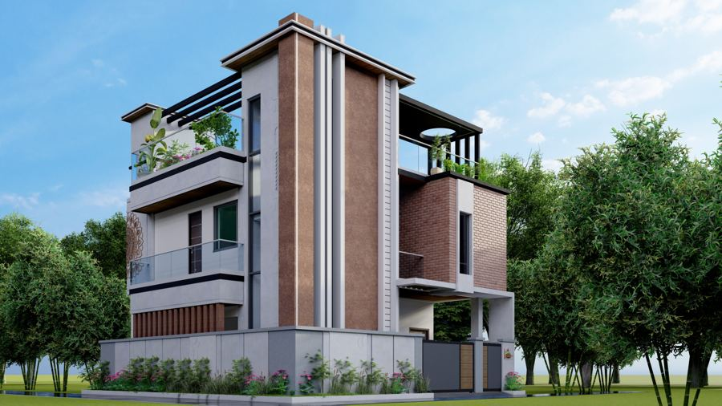
Building Your Home in Chennai: From Plot to Possession
A plain-language walk through the stages of building an independent house, and the decisions that matter most at each one.
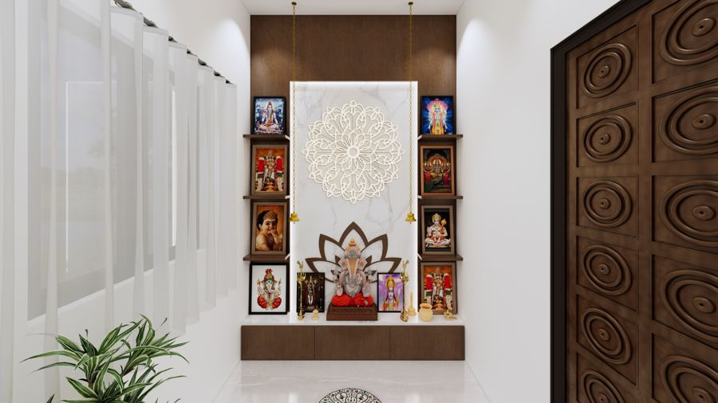
Vastu and Contemporary Design Can Live Together
Many families want both a modern home and one that respects Vastu. In our experience, the two agree more often than they disagree.
Let’s shape your space in light.
Tell us about your site, your plans and your budget. We will get back within two working days with next steps.